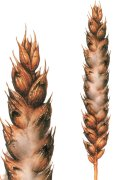

Toxikus fuzáriózis
(Fusarium-fajok)
Elsősorban a gabonaféléket és a kukoricát támadja meg a betegség.A talajban is meg tudnak élni ezek a gombafajok (szaprofita életmód).Gyenge csírázást, gyökér- és szárkorhadást, csőpenészedést, penészbevonatot okoznak. A gomba aflatoxint termel, mely sertésekben szaporodásbiológiai zavarokat (vetélést) idéz elő.
Védekezés:
vetésváltás szigorú betartása
gombaölő
szerek (Sportak, Prelude, Parner)